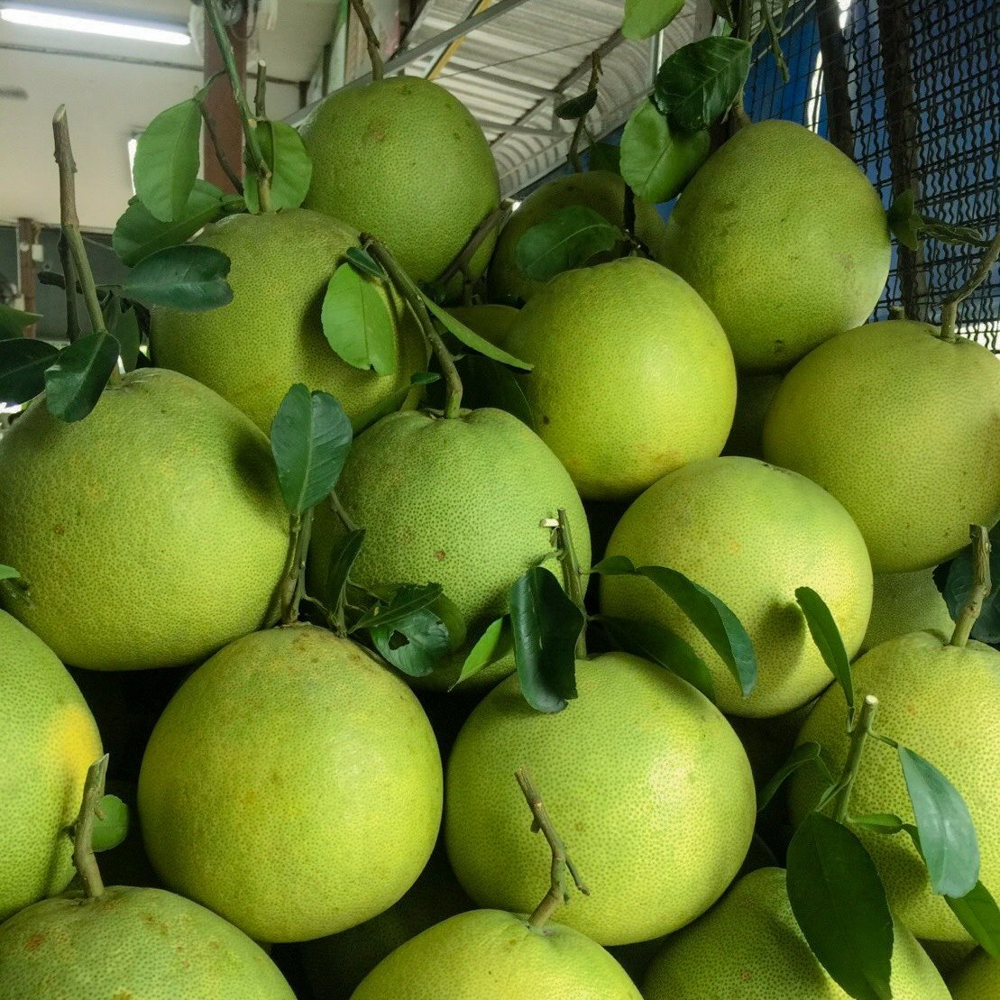
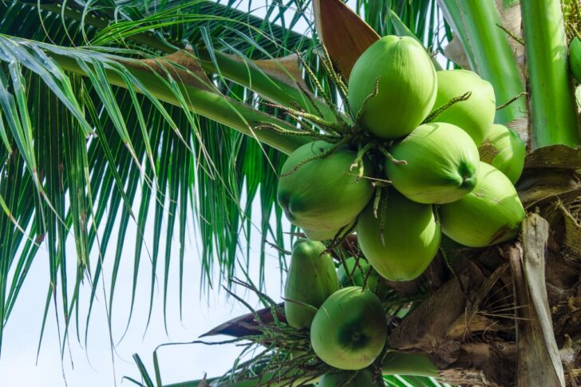

ของดีประจำจังหวัด
นครปฐมขึ้นชื่อว่าเป็น "เมืองแห่งอาหาร" และผลไม้รสเลิศครับ โดยของดีที่นี่ส่วนใหญ่จะเน้นไปที่ของกินและผลผลิตทางการเกษตรที่มีชื่อเสียงระดับประเทศ
ผลไม้ขึ้นชื่อ (Fruit)
- ส้มโอนครชัยศรี: ถือเป็นสัญลักษณ์อันดับ 1 มีรสชาติหวานอร่อย เนื้อดี ไม่แฉะ

- มะพร้าวน้ำหอมสามพราน: มีชื่อเสียงเรื่องความหอมหวาน เป็นแหล่งปลูกใหญ่ที่ส่งออกไปทั่วโลก

สถานที่สำคัญและแหล่งท่องเที่ยว